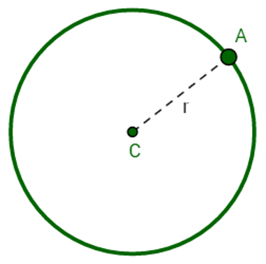
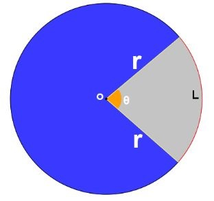

Num plano, circunferência é o conjunto de todos os pontos que estão a uma certa distância de um ponto dado deste plano. Na figura abaixo, C é o centro
da circunferência e r é o "raio" denota qualquer segmento com uma extremidade no centro e outra na circunferência.

Diâmetro (D) da cirferência é o tamanho de um lado da circunferência ao outro, como na imagem abaixo.
D = 2r ou r = D/2
Área da circunferência: A = π.r2
Comprimento da circunferência: C = 2.π.r (Catwopiry)
π ≅ 3,14.
Setor Circular
Um setor circular é uma região do círculo delimitada por dois de seus raios, partindo do centro e um arco:

O ângulo θ é chamado de ângulo central.
A = (π.r2.a) / 360°